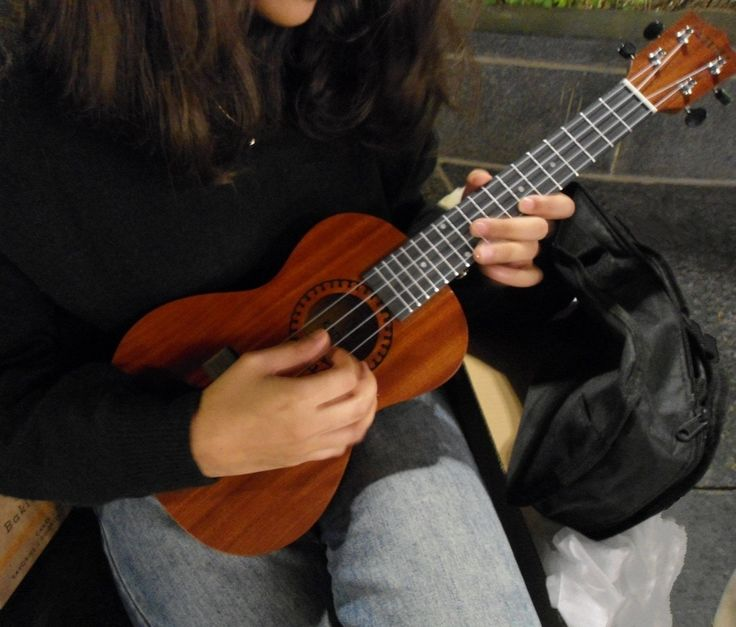
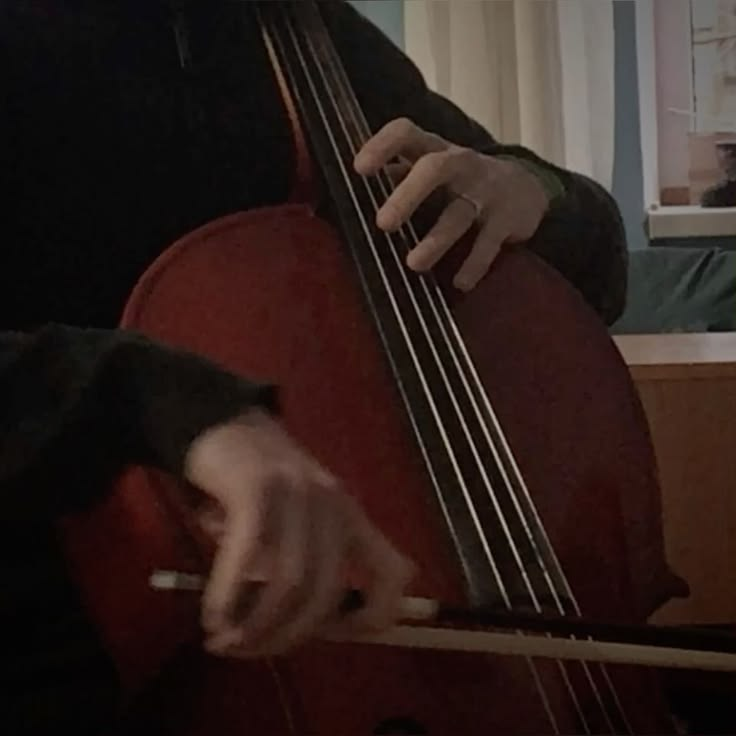
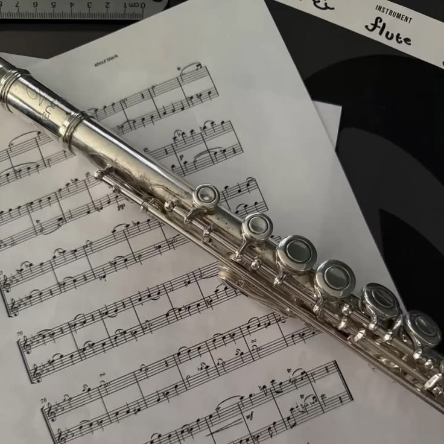
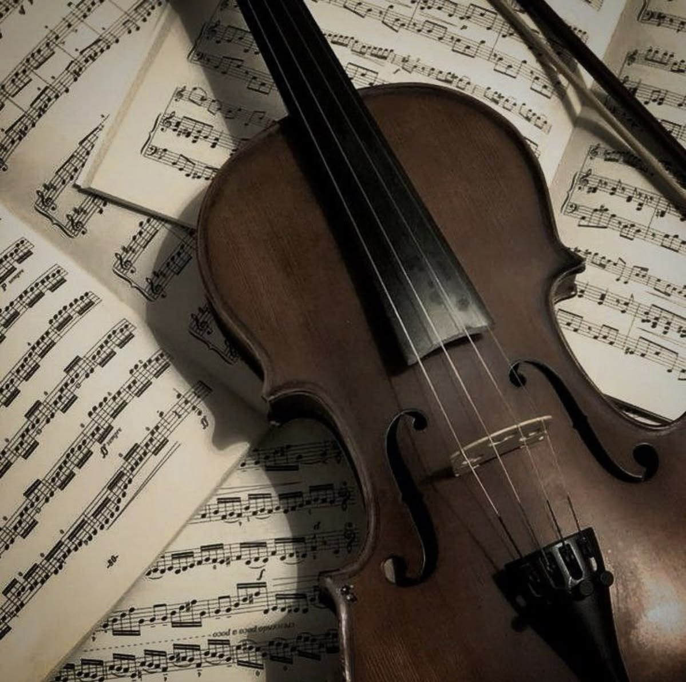
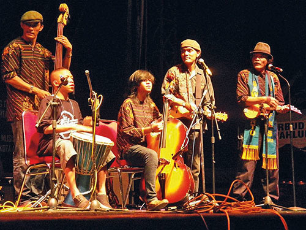
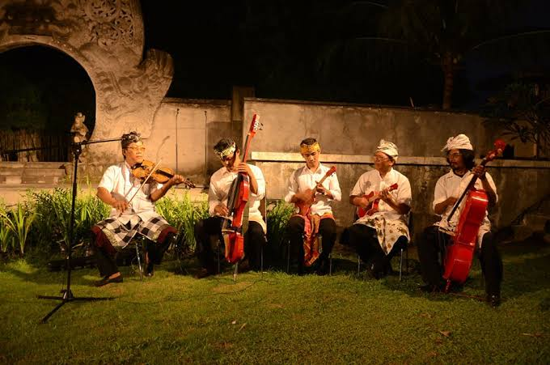
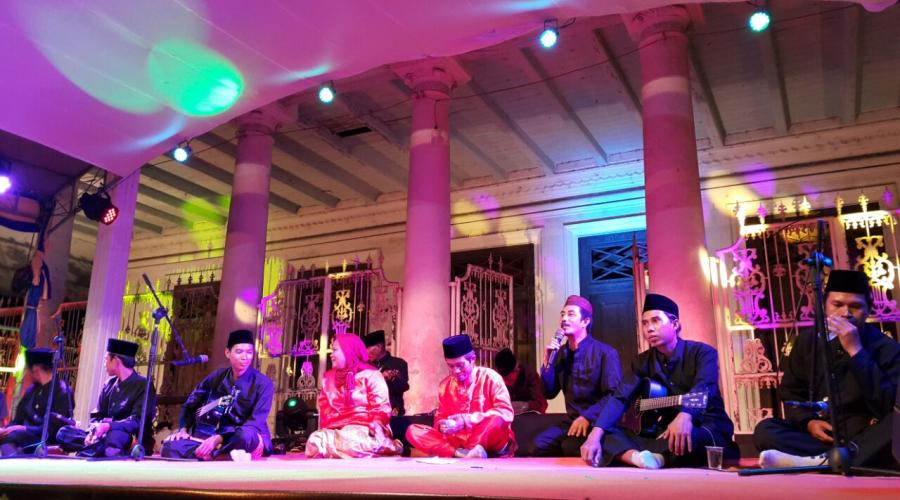
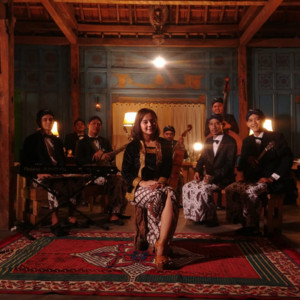

Keroncong adalah salah satu jenis musik tradisional Indonesia yang memiliki melodi lembut dan khas. Musik ini menggunakan berbagai alat musik seperti cak, cuk, cello, biola, dan flute. Keroncong telah berkembang menjadi salah satu bagian dari warisan budaya musik Indonesia.

Cak & Cuk
Alat musik petik
Cello
Pengatur irama bass
Flute
Pembawa melodi
Biola
Memainkan melodiAwal perkembangan keroncong berkaitan dengan pengaruh musik Portugis yang masuk ke wilayah kepulauan Indonesia.
Musik keroncong berkembang di berbagai daerah dan mulai memiliki ciri khas musik Indonesia.
Keroncong semakin populer dan mulai dikenal melalui berbagai penyanyi dan kelompok musik di Indonesia.

Keroncong Asli
Bentuk tradisional keroncong
Langgam
Memiliki melodi yang lembut
Stambul
Berkaitan dengan musik teater
Keroncong Modern
Perpaduan keroncong dengan musik modernKeroncong bukan hanya sekadar musik, tetapi juga merupakan bagian dari identitas budaya Indonesia. Musik ini menunjukkan bagaimana berbagai pengaruh budaya dapat berkembang dan menyatu dengan budaya Indonesia. Hingga saat ini, keroncong terus dilestarikan dan diperkenalkan kepada generasi muda.